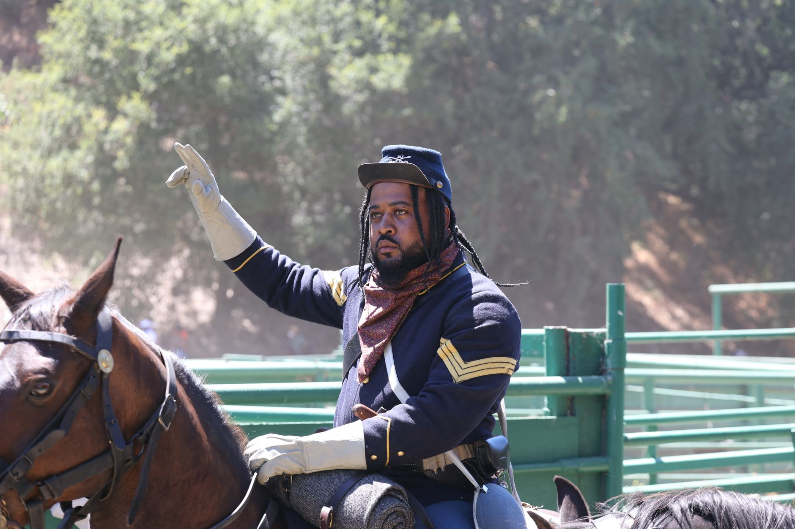
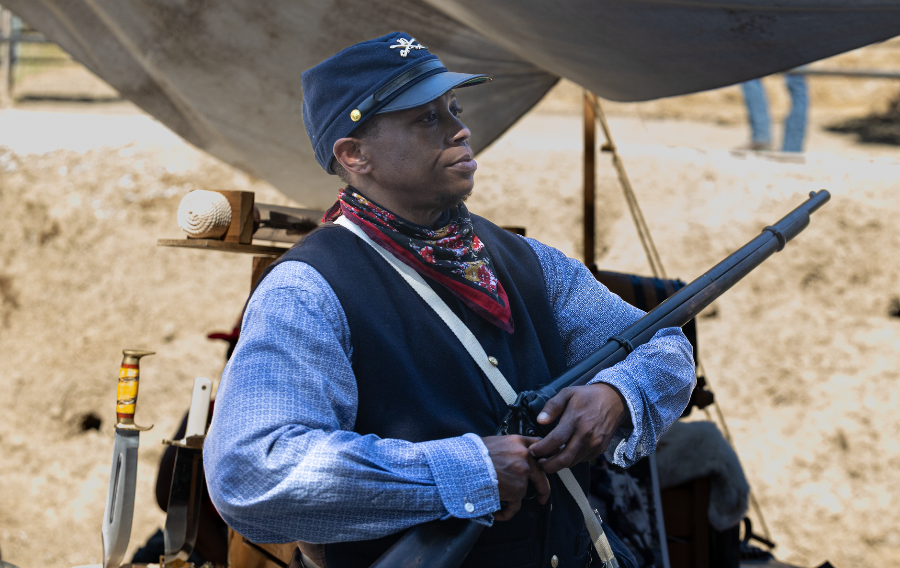

Season 1, Episode 4 — The Class of 1846

59 cadets graduated in 1846. 22 of them became generals. That's a 37% general rate — compared to 0.5% for all of West Point's history. No class before or since has come close. They fought in three wars together: the Mexican-American War, the Seminole Wars, and the Civil War. They were roommates, best friends, rivals, and eventually enemies. This is the class that destroyed itself.
The Class of 1846 graduated as the Mexican-American War began — they went straight from the classroom to combat. By 1861, they had known each other for fifteen years. They had served together in Mexico and Florida. They had eaten at the same tables, courted the same women, and formed bonds that would be torn apart by secession.
Four men from this class define its legacy. They could not be more different: the golden boy, the grinder, the speedster, and the class clown. Between them, they shaped the course of the Civil War.
The golden boy. Second in his class. Charming, brilliant, confident. George McClellan was the "Young Napoleon" — the man everyone expected to win the war. He was a brilliant organizer who built the Army of the Potomac from nothing into a fighting force. His men adored him. He could drill a parade ground until it wept.
But he was also paralyzed by caution. He always believed the enemy outnumbered him — and Confederate spies fed him inflated numbers that he believed without question. He called Lincoln a "gorilla" and a "well-meaning baboon." Lincoln said McClellan had "the slows."
In 1864, McClellan ran for president against Lincoln — and lost in a landslide (212 electoral votes to 21). The man who was supposed to save the Union ended his career as a footnote to the man he despised.
McClellan was the best organizer of the war and the worst battlefield commander. His men loved him. His president couldn't stand him. He was a genius at everything except the one thing that mattered: winning. He built the perfect army — and was too afraid to use it.

The men of 1846 went from cadets to generals in less than a decade
The grinder. From a poor Appalachian family, barely educated before West Point. He struggled his first year — almost flunked out. But he studied obsessively and climbed to 17th in his class. At West Point he was called "Tom Fool" for his odd mannerisms: he sat with his arm straight up to "balance his blood," ate only bland food, and was obsessed with his health.
His nickname "Stonewall" came from First Bull Run. General Barnard Bee, trying to rally his men, reportedly said "There stands Jackson like a stone wall!" But Bee was angry — Jackson hadn't moved to support him. The nickname may have been an insult that got repurposed as a compliment.
Jackson was Lee's most brilliant lieutenant. His Valley Campaign of 1862 is studied at military academies worldwide. He died at Chancellorsville in 1863 — shot by his own men (friendly fire). Lee said, "I have lost my right arm."
The eccentric country boy who became Lee's right arm, killed by his own soldiers at the peak of his powers. Jackson's death was the single greatest loss the Confederacy suffered — and it came from a trigger pulled by a nervous picket in the dark.
McClellan's roommate and best friend at West Point. Then they both fell in love with Ellen Marcy. She chose McClellan. Hill never forgot.
Hill commanded the "Light Division" — known for its speed and ferocity. At Antietam, Hill's division made a desperate march from Harpers Ferry and arrived just in time to save Lee's army — slamming into McClellan's flank. The personal drama is almost too perfect: McClellan was winning. He had Lee trapped. Then Hill's division appeared — Hill, his former roommate, the man whose fiancée he had stolen.
Hill was killed at Petersburg, April 2, 1865 — just one week before Lee's surrender.
McClellan and Hill were best friends. Then they both loved the same woman. She chose McClellan. Years later, at Antietam, Hill's division arrived at the critical moment and saved Lee's army from McClellan's trap. Personal history and military history do not stay separate — they collide, sometimes in the smoke of a battlefield.
The class clown. Charming, popular, mischievous. Played hooky at the local bar. Finished dead last in a class of 59. But he became a major general.
His name is forever attached to Pickett's Charge — the doomed frontal assault at Gettysburg.
This is one of the most persistent myths of the Civil War. Longstreet commanded the overall assault. Pickett led only his own division — one of three divisions in the attack. After the war, Pickett bitterly blamed Lee for the disaster. His name is attached to a charge he didn't command, and a failure he didn't design.
After the war, Pickett fled to Canada for a time — fearing prosecution for war crimes related to the execution of deserters. He returned and worked as an insurance salesman. Last in his class, first in infamy.
At Antietam, the Class of 1846 faced itself. McClellan commanded the Union army. Jackson and Hill commanded Confederate corps. The class was effectively at war with itself — roommates trying to kill each other.
At Gettysburg, the class met again. Pickett's division made the charge. Longstreet (Class of 1842) commanded. Hancock (Class of 1844) defended the Union center. But the men of '46 were there — on both sides of the stone wall.
By the time the war ended, four of the class's most famous members were dead: Jackson (1863), Stuart (1864, though he joined the class late as an engineer), A.P. Hill (1865), and others. The class that had started together in 1846 had been fighting each other for four years. It was, in every sense, a civil war within a civil war.
Class of 1846 at a Glance:
How this works: Work through each phase in order. Don't scroll ahead to the answers.
Cover the answers below. For each clue, respond in the form of "Who is…" or "What is…". Answers are at the bottom of this page.
Phase 1 (Fill-in-the-Blank):
Phase 2 (Core Jeopardy):
Phase 3 (Previously On… — Modules 1–3):
In Module 5: Lee's Generation, we step back to the old guard — the men who graduated before the Class of 1846 and shaped the army these cadets inherited. Lee, Joseph Johnston, and Jefferson Davis. The men who were already legends when McClellan and Jackson were still in the classroom.
John C. Waugh's The Class of 1846: From West Point to Appomattox — the definitive book on this class, winner of the Fletcher Pratt Award. Waugh traces the lives of all 59 graduates from the classroom to the battlefield, building the full story of the class that fought and destroyed itself.
Have a question about the Class of 1846? Want to dig deeper into Jackson's Valley Campaign, McClellan's Peninsula Campaign, or the love triangle that put Hill at Antietam? Just ask — I'm your teacher.